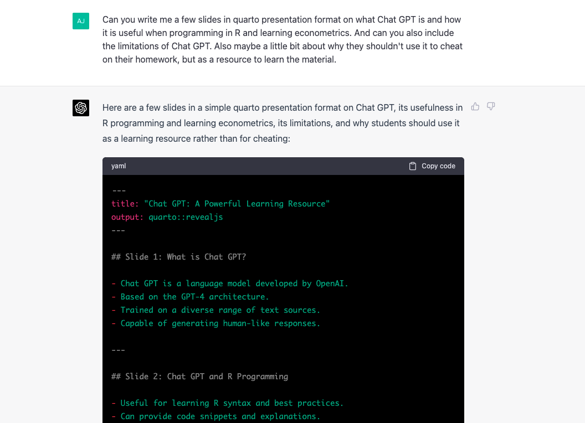

What is Chat GPT?
- Chat GPT is a language model developed by OpenAI.
- Based on the GPT-4 architecture.
- Trained on a diverse range of text sources.
- Capable of generating human-like responses.
Chat GPT and R Programming
- Useful for learning R syntax and best practices.
- Can provide code snippets and explanations.
- Helps in debugging and troubleshooting.
- Offers suggestions for data manipulation and analysis.
Chat GPT and Econometrics
- Assists with understanding econometric concepts.
- Provides examples of natural experiments and regression models.
- Explains various estimation methods and their assumptions.
- Helps with interpreting results and understanding their implications.
Limitations of Chat GPT
- Knowledge cutoff: September 2021.
- May not have the latest information on specific topics.
- Potential for generating incorrect or outdated information.
- Can sometimes provide verbose or irrelevant responses.
Chat GPT as a Learning Resource, Not for Cheating
- Use Chat GPT to deepen your understanding of the material.
- Cheating undermines your education and future success.
- Developing problem-solving skills is essential for long-term career growth.
- Engage with Chat GPT to clarify concepts, not to complete assignments.
Tips for Using Chat GPT Effectively
- Ask specific, well-defined questions.
- Always verify information provided by Chat GPT.
- Use multiple resources to cross-check and validate answers.
- Remember that Chat GPT is a tool to enhance your learning experience, not replace it.
Conclusion*
- Chat GPT can be a valuable resource for learning R programming and econometrics.
- Be aware of its limitations and always double-check the information provided.
- Use Chat GPT as a learning aid and not for cheating on assignments.
- Embrace the opportunity to develop problem-solving skills and deepen your understanding of the material.
Chat GPT
The previous 7 slides were all written by Chat GPT

GPT conclusion (written by me)
Chat GPT is a breathtaking piece of technology
But it is also frightening. This tech has and will continue to disrupt education
It has changed my day to day workflow already.
Use it wisely. Don’t cheat with it. But use it to help your understanding.